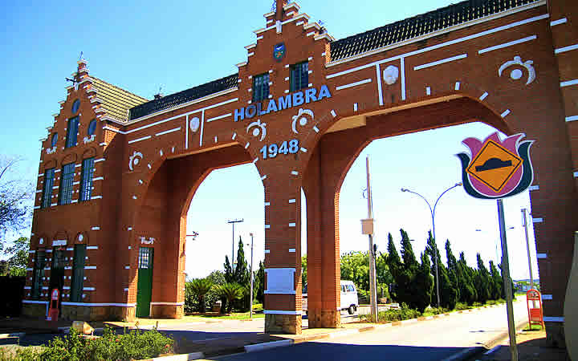
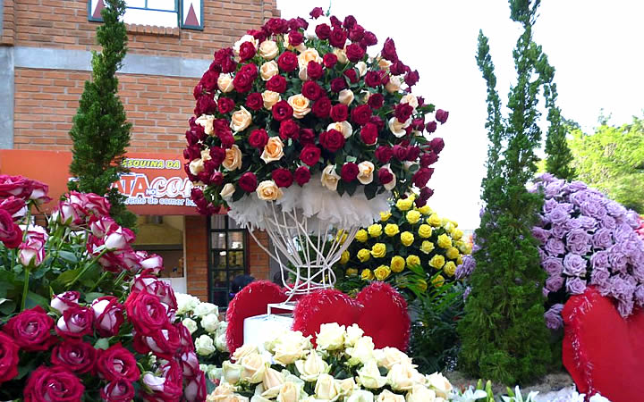
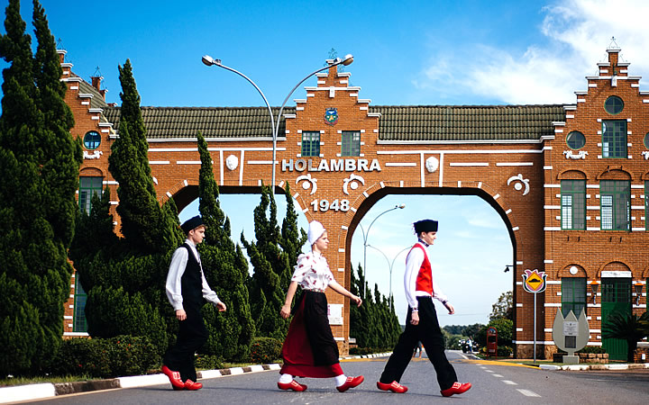
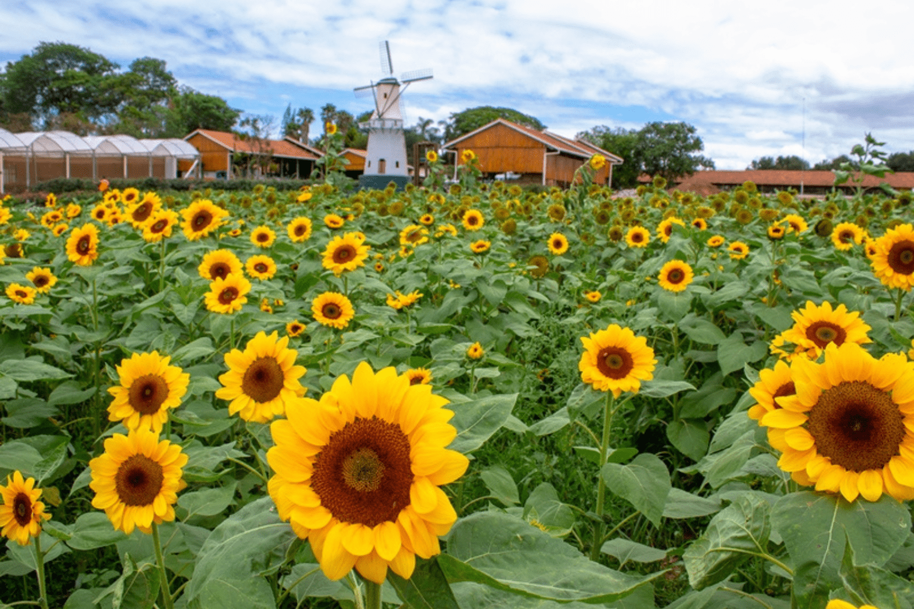

Onde fica Holambra?
Holambra é uma cidade localizada no interior de São Paulo – mais precisamente, na região de Campinas, a 130 quilômetros da capital paulista. Pequena e singela, ela conta com pouco mais de 13000 habitantes, dos quais 2000 são descendentes de Holandeses. Mas não se engane com o número tímido de moradores: em eventos como o Explofora, Holambra reúne milhares de turistas e é capaz de acomodá-los com conforto em suas pousas e hotéis.
Saiba Mais

Exploflora – Você vai se apaixonar!
O Explofora ocorre todos os anos e atrai milhares de turistas. Romantismo e muita beleza são alguns dos motivos que fazem do Explofora algo diferente de tudo que você já viu.O momento mais aguardado do evento é a chuva de pétalas, que levam uma série de misticismo e tradição. Acredita-se que quem pegar uma delas pétalas antes que ela toque o chão, terá sorte no amor. Simpatia ou fé, a ideia é unir a fantasia com a beleza da natureza!
Saiba Mais

Como ir à Holambra?
Para quem vem de São Paulo, Holambra é relativamente perto. Na rodoviária da cidade, a do Tietê, há diversos ônibus que saem rumo ao simpático destino. Para quem vem do Rio de Janeiro, há também algumas opções de passagens pontuais. Você poderá também optar por uma Excursão a Holambra, é uma maneira mais simples de visitar a cidade das flores!
Saiba Mais

Passeio aos Campos de Produção
O explofora só acontece uma vez ao ano e pode ser que não coincida com sua viagem. Mas conhecer os campos de produção é um passeio que está liberado sempre. Imagine conhecer os lugares onde as flores nascem e crescem? A beleza natural e o cheiro incrível delas vai te deixar apaixonado!
Saiba Mais